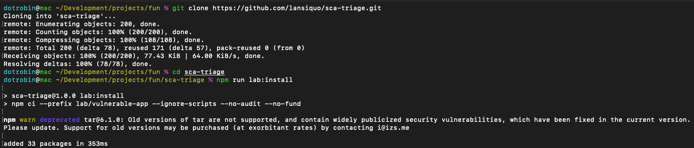
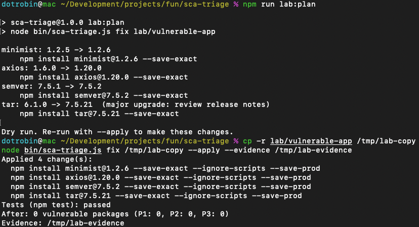

sca-triage
I built sca-triage, an npm SCA scanner that ranks vulnerabilities by whether your code loads the vulnerable package, then applies the smallest safe upgrades, proves them with your project’s tests and saves a before-and-after report. This lab follows one application from four flagged dependencies to a clean rescan, with the terminal evidence at each step.
Version 1.0. The tool runs locally and as a GitHub Action. The demo replays a recorded run; the screenshots below are from the real CLI.
The problem
Finding a vulnerable dependency is only the first step. I wanted a workflow that explains which findings deserve attention, proposes concrete upgrades, runs the application’s tests and checks the resulting dependency tree.
sca-triage is a command-line tool and reusable GitHub Action for npm projects. I tested it on intentionally-vulnerable-export-job. This small local app parses export options with minimist, checks client versions with semver and imports axios through its notification code. It also installs tar without importing it, giving the scanner a useful contrast between advisory severity and import evidence.
The app deliberately pins four vulnerable dependency versions. The captured output and screenshots below document the local workflow: the initial findings, the applied changes and a separate scan afterward. The final workflow step shows the generated before-and-after report.
Scan, fix, rescan
-
Establish the vulnerable baseline
3 P1 · 1 P2The first scan checks 33 packages and flags four vulnerable dependencies.
minimist(critical, 1 advisory),axios(high, 31 advisories) andsemver(high, 1 advisory) are P1 because the app imports them, insrc/export-job.jsandsrc/notify.js.tar(critical, 18 advisories) ranks P2 because the tool finds no import of it. With three P1 findings, the default P1 gate fails.
Setup: clone the repository and install the lab app’s pinned dependencies with install scripts disabled. View full size. 
Each finding shows where the app imports the package and the smallest fixing version. The P1 gate fails, so the command exits with code 1. View full size. -
Apply the planned upgrades
4 upgrades appliedI reviewed the dry-run plan, then ran
fix --applyon a copy of the lab app with an evidence directory. The output shows four pinned upgrades installed with--ignore-scripts, a passingnpm testresult, zero vulnerable packages (P1: 0, P2: 0, P3: 0) in the tool’s post-change scan and the evidence saved to/tmp/lab-evidence. Thetarupgrade crosses from major version 6 to 7, and the tool flags it as a major upgrade for release-note review. Because the app never loadstar, the recorded tests exercise the app’s own behavior and the minimist security test rather than tar’s API.
The dry run lists each upgrade before anything changes. The apply step runs on a copy of the lab app with install scripts disabled; it shows a test summary, not the individual test log. View full size. -
Check the updated dependency tree
P1 gate: passFinally, I ran
scanagain on the updated app. This separate check scans 37 packages, reports no known vulnerabilities in the installed versions and passes the P1 gate. The package count changes after the upgrades; the clean result applies to this new inventory and the advisory data available at scan time.
The follow-up scan confirms zero advisory matches for the recorded installed versions. View full size. -
Review REPORT.md
Evidence savedThe saved
REPORT.mdbrings the baseline findings, applied upgrades, project test results and post-remediation scan into one record.
The report records the test transition from failure to success alongside the dependency changes and clean scan. It also states its scope: import-level reachability and advisory data at scan time. View full size.
What changed
| Dependency | Before | Applied version | Baseline priority |
|---|---|---|---|
| minimist | 1.2.5 | 1.2.6 | P1 |
| axios | 1.6.0 | 1.20.0 | P1 |
| semver | 7.5.1 | 7.5.2 | P1 |
| tar | 6.1.0 | 7.5.21 (major upgrade) | P2 |
Recorded outcome: four flagged dependencies became zero, P1 findings decreased from three to zero, and the final scan’s P1 gate passed. The generated report records npm test failing before the upgrades and passing afterward. This evidence demonstrates the remediation workflow on the lab app.
The repository’s security regression test also checks that parsing crafted options does not modify Function.prototype, covering the minimist prototype-pollution advisory GHSA-xvch-5gv4-984h. The captures don’t include that test’s log, and the other three packages have no demonstrated exploit.
Technologies & stack
- Tool: JavaScript ES modules and Node.js built-ins, with no third-party dependencies in the CLI itself.
- Inputs:
package.jsonandpackage-lock.jsonv2/v3 (nonode_modulesneeded to scan), GitHub Advisory Database data from the npm registry over HTTPS, and imports found in application source. - Validation:
npm testbefore and after an applied change when the project defines that script, followed by another dependency scan. - Saved evidence: a Markdown report, before-and-after findings, both lockfiles and test logs. A CycloneDX SBOM is included when npm’s SBOM command succeeds.
- Automation: a reusable GitHub Action exposes the scan’s priority gate to CI (
pathandfail-oninputs) and adds the findings table to the job summary.
How triage works
The tool combines known advisory severity with static import evidence. A high-severity advisory and a package imported by the app rank ahead of an equally severe advisory in a package for which no import was found:
- P1: high or critical, with a direct import or a dependency path from an imported package.
- P2: high or critical without that import evidence, or moderate with it.
- P3: the remaining findings.
Dependency paths follow regular, optional and peer dependencies from the root and from every workspace package, and npm aliases are matched by the name the code imports. Import evidence covers require(), static and dynamic import, export … from, createRequire() and template-literal specifiers across JavaScript, TypeScript, Vue, Svelte and Astro files.
For each vulnerable copy, the planner looks for the smallest higher published, non-prerelease version outside the package’s advisory ranges, preferring the same release line (the same major version, or the same 0.minor below 1.0.0). If only a major upgrade is available, it flags that change. Direct dependencies are pinned with npm install --save-exact --ignore-scripts; transitive copies get npm overrides, scoped to the packages that require them whenever a single global override could rewrite the wrong copy. The separate rescan checks the updated dependency tree again. In this run, all four dependencies were upgraded, including P2 tar: the P1 gate controls scan failure, while the default fix plan includes all priorities.
Source: ranking and version selection · upgrade and evidence workflow.
What has been verified
- 42 unit tests
- Run offline with
npm testand pass: version matching, the lockfile graph (aliases, workspaces, peer dependencies), reachability across import forms and file types, ranking, fix planning with pins and scoped overrides, registry checks, report escaping and the untested-upgrade warning. - CI lab gate
- On every push to
mainand every pull request, the scan must fail on the vulnerable baseline, the security test must fail before the fix, and the remediated copy must pass both its tests and the P1 gate. - A real project
- On OWASP NodeGoat (1,479 packages), it narrowed 437 advisories across 180 vulnerable packages to 13 P1 packages. Counts change as the advisory database is updated.
- This page
- The screenshots above are captures from real local runs of the tool.
Scope and limits
- The lab is an intentionally vulnerable learning app with invented data, not an employer system or a production assessment.
- The tool covers npm projects (
package-lock.jsonv2/v3) and known advisories. Pair it with application security review and exploitability analysis for a full picture. - Reachability is import-level: “imported” means the code loads the package, not that the vulnerable function is proven to run. It ranks findings and never hides them, so P2 and P3 findings still get reviewed.
- The project’s own tests are the safety net for each upgrade, so the verdict is as strong as that suite. Upgrades without a test run are marked unverified.
- Results reflect the advisory database at scan time. Zero findings is not a security certification.
Run it yourself
Use Node.js 20+ and npm, with access to the npm registry. Keep the deliberately vulnerable app local; don’t deploy it or expose it to a network. Apply changes to a copy so the original lab stays available for another baseline run.
git clone https://github.com/lansiquo/sca-triage.git
cd sca-triage
npm run lab:install
mkdir -p ./evidence
lab_run="$(mktemp -d)"
evidence_run="$(mktemp -d "$PWD/evidence/run.XXXXXX")"
cp -R lab/vulnerable-app "$lab_run/app"Run the scan and review the upgrade plan in the same terminal. The vulnerable baseline scan is expected to exit with code 1 because the P1 gate fails.
node bin/sca-triage.js scan "$lab_run/app"
node bin/sca-triage.js fix "$lab_run/app"After reviewing the plan, apply it and rescan. A new evidence folder keeps each run separate.
node bin/sca-triage.js fix "$lab_run/app" --apply --evidence "$evidence_run"
node bin/sca-triage.js scan "$lab_run/app"Inspect the test logs and any major-version changes before keeping the result. Versions and advisory counts follow the live advisory database, so a new run can differ from these captures.